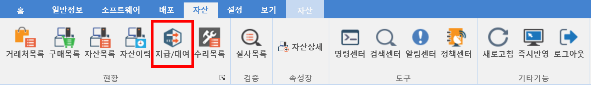
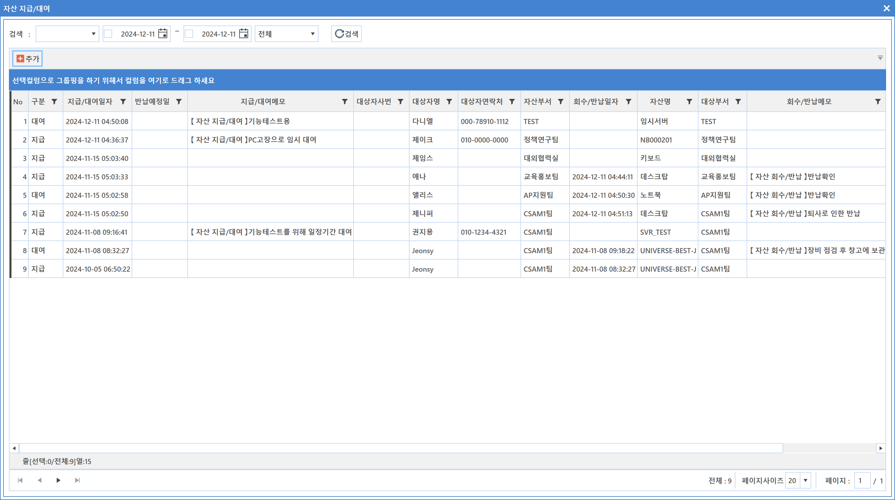
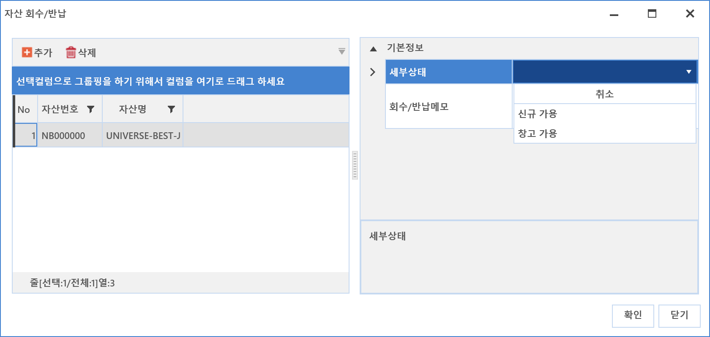
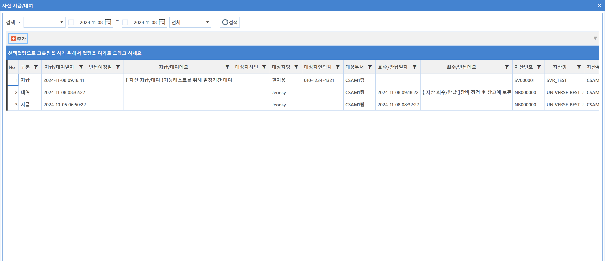

7-1-5. 지급/대여
7-1-5. 지급/대여
Source: https://www.sweeper.or.kr/etc/manual/719.html
7-1-5. 지급/대여


장비를 지급/대여한 현황을 확인하고 쉽도록 별도 화면을 구성했습니다. 지급/대여와 관련된 상세 이력도 확인 가능합니다.
각 항목별 지급된 자산들은 하단화면을 통해 확인가능하며, 개별적인 회수/반납 작업도 가능합니다.


자산지급 방법
- 추가 버튼을 클릭합니다. 자산지급/대여 화면이 팝업되면 해당정보를 입력합니다.

-
처리구분 : 지급, 대여 중 해당되는 처리 방법을 선택합니다.
-
지급 : 퇴직 시까지 사용되는 자산 지급을 말합니다.
-
대여 : 특정 기간동안 사용되는 자산 지급을 말합니다.
-
대여를 선택하는 경우 반납예정일을 설정하는 내용이 추가됩니다.
-
간단모드
-
세부상태와 메모 입력 만으로 지급/대여를 해줍니다.

-
자산선택
-
추가 버튼을 클릭하여 지급해야 하는 자산을 선택합니다.
-

-
자산사용 구분 : 자산구분을 선택합니다.
-
개인 : 지정된 직원 한사람이 사용하는 자산을 말합니다.
- 공용 : 다수 사용자가 사용하는 자산을 말합니다.
-
외부/협력사 : 외부 방문자 또는 협력사 직원들이 사용하는 자산을 말합니다.
-
사원번호 : 해당 사용자의 사번을 입력합니다.
- 사용자명 : 사번 입력시 자동으로 입력됩니다.
- 전화번호 : 사번 입력시 자동으로 입력됩니다.
- 반납예정일 : 반납 예정일을 설정합니다. (자산사용 구분을 대여로 선택했을 시 나타납니다.)
- 대상부서 : 지급되는 대상 부서를 선택합니다.
- 사용용도 : 자산사용 용도를 선택합니다.
- 사용용도상세 : 자산사용 용도을 추가 내용을 입력합니다.
- 설치위치 : 설치위치를 선택합니다.
- 설치위치 상세 : 설치위치 추가 내용을 입력합니다.
- 세부상태 : 지급/대여 표시 이외 추가적인 상태가 있을 경우 선택합니다.
-
메모 : 간단한 설명을 추가해야 하는 경우 입력합니다.
-
입력이 완료되면 확인버튼을 클릭합니다.
- 등록된 지급 및 대여 내용을 확인합니다.
자산회수 방법
- 회수 대상 목록을 선택한 후 마우스 우클릭하여 회수/반납 메뉴를 선택합니다.

- 회수 내용을 확인하고 세부상태를 선택한 뒤 간단한 메모내용을 입력합니다.
 - 입력이 완료되면 '확인' 버튼을 클릭합니다.
- 화면에 회수/반납 일자가 표시된 것을 확인합니다.

© Copyright SWeeper Inc.. All Rights Reserved